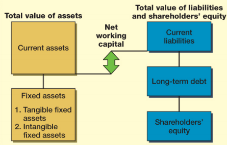
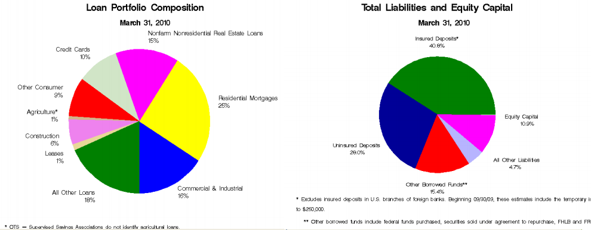

The balance sheet is a snapshot (stock measure) of the firm's assets and liabilities at a given point in time.
The Balance Sheet can be broken down by this simple equation called the Balance Sheet Identity.
Here is the relationship between assets, liabilities, and equity visualized
Now let's break down AT&T's 2019 balance sheet and satisfy this equation
Firm issues debt that has a face value of $100.
Cash: + $100
Short-term debt: +$100
Firm issues $100 of more stocks to pay for accounts payable
No action
Equity goes up $100 from the shares, and accounts payable from liabilities goes down $100.
Firm repurchases $1000 stocks
Decrease in cash by $1000
Equity decreases by $0100
Firm takes a loan of $100
Increase of cash of $100
From liabilities, short term loans increase by $100
A person stakes their money and deposits it in the bank
Banks deposit (like cash) increases by $100
From liabilities, short term loans increase by $100
From the banks perspective
Someone takes a loan from the bank
Bank gains a loan in their asset
Person deposits in the bank
Deposit is added to their liabilities
One thing to note is that if someone defaults on their loan with the bank, the bank will loose money in their assets. To balance this loss out, the defaulted loan loss in the equity side of the equation will also decrease.
Credit cards make up 10% and they offer a line of credit to borrowers. Compared to mortgages, where the borrower gets the lump sum at the start of the deal, and they have collateral.
During financial crisis' people use credit cards more often, but this doesn't harm the cash flow of a bank since during economic downturns, people also save more too and thus deposit more. This is what is called the cushion effect
While the balance sheet represents a financial snapshot, the income statement is a flow measure over a period of time. The purpose of the income statement is to measure a firm's performance.
The reatined